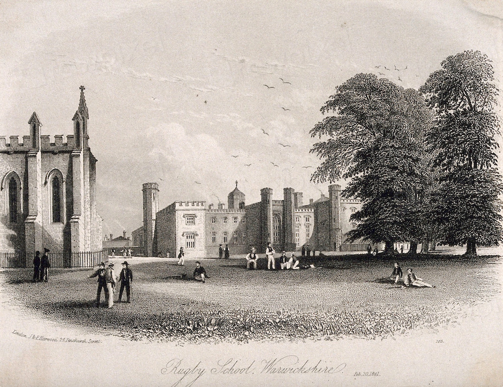

Early Years
Stanley Trafalgar Rawlinson was born on 28 March 1814 in Luton, Bedfordshire, the ninth son of Thomas Fawcett Rawlinson, an officer of the Royal Navy, and Mary Elisabeth Rawlinson (née Ransford). The Rawlinsons were a family of modest gentry with strong naval traditions, tracing their service back to the late eighteenth century. Sir Stanley's middle name — Trafalgar — was chosen in commemoration of his father's presence aboard HMS Victory during Admiral Nelson's famous victory nine years earlier, and it remained a point of immense pride throughout his life.
Education at Rugby School (1824–1831)

Rugby School, c. 1824
In 1824, at the age of ten, Stanley was enrolled at Rugby School, then one of the leading institutions of English education. His seven years there would prove formative, not only shaping his intellect but also his sense of discipline and moral conduct — qualities he would later claim "no man of ambition should be found without."
Records from the school describe young Rawlinson as "a diligent scholar, steady in his studies of Latin and French, and possessing a vigorous if occasionally erratic command of the Classics and History." He was, by all accounts, "moderately sporty but rarely enthused by the sciences," a pattern that would endure into adulthood.
Friendship with Tom Brown
During his time at Rugby, Stanley struck up a close friendship with a fellow pupil one year his junior — Tom Brown, the same Tom Brown later immortalised by Thomas Hughes in his semi-autobiographical 1857 novel Tom Brown's Schooldays. Hughes, who famously combined elements of Brown, his brother George, and his own experiences to create the character, later revealed that the forthright and loyal "Diggs" was loosely based on Brown's descriptions of Stanley Rawlinson.
The friendship between Brown and Rawlinson was genuine and enduring. Letters between the two, now preserved in the Rawlinson Papers at the Society's archive, show that they remained correspondents and occasional travel companions for decades.
Brown would later recount that Stanley had "frequently stepped in to assist [him] against the recriminations of his tormentor," the notorious Harry Paget Flashman. It is widely believed that the famous scene in Hughes's novel — where Diggs encourages Brown to stand up to and ultimately humiliate Flashman — was inspired by a real incident at Rugby, in which the young Rawlinson intervened.
Years later, when their paths crossed in society circles, Stanley remained openly disdainful of Flashman's reputation, dismissing him as "a braggart and a bounder, whose list of alleged achievements grows longer the further he is from the truth."
The Path to Empire: Joining the East India Company (1831)

Offer of employment to the EIC, 1831
Upon leaving Rugby in 1831, at the age of eighteen, Rawlinson faced the common dilemma of younger sons of respectable but not wealthy families — the pursuit of a suitable career. Drawing upon family connections, he appealed to his cousin Henry Rawlinson, a rising officer of the East India Company stationed in Bombay since 1827. Henry, later to gain fame as a scholar of Persian antiquities and a noted Orientalist, was already building a formidable reputation in Company circles.
Through Henry's intervention, Stanley was recommended to Russell Ellice, one of the Directors of the East India Company, who duly arranged for his nomination to a "writer" (civilian) position within the Company's administration.
This appointment marked the beginning of what would become a lifelong fascination with the politics, cultures, and languages of the subcontinent — and the first step in a career that would see Stanley Rawlinson evolve from Company servant to parliamentarian, explorer, and author.